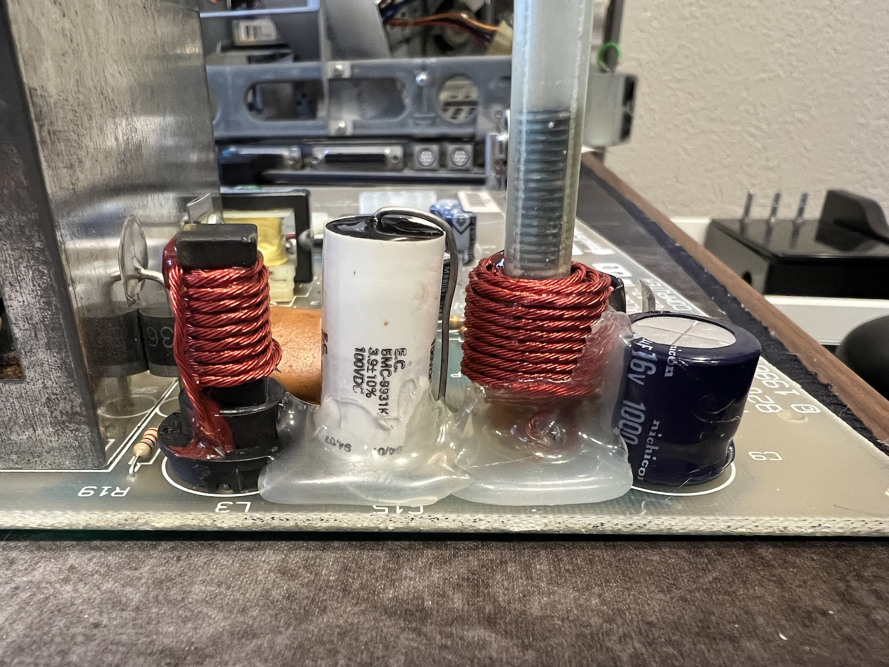
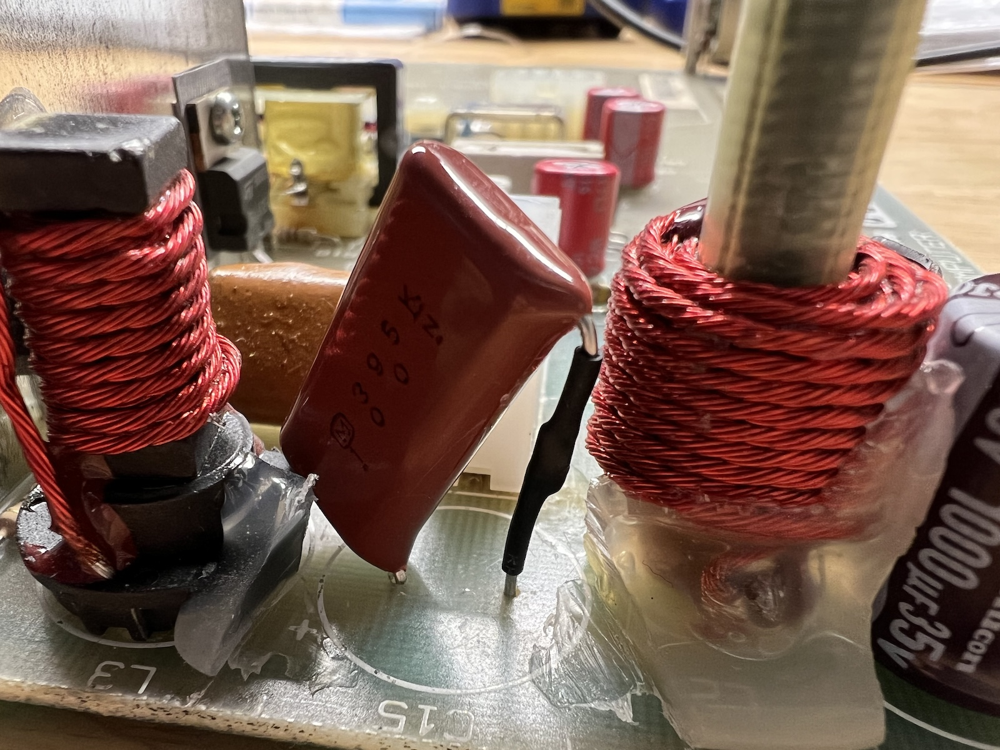
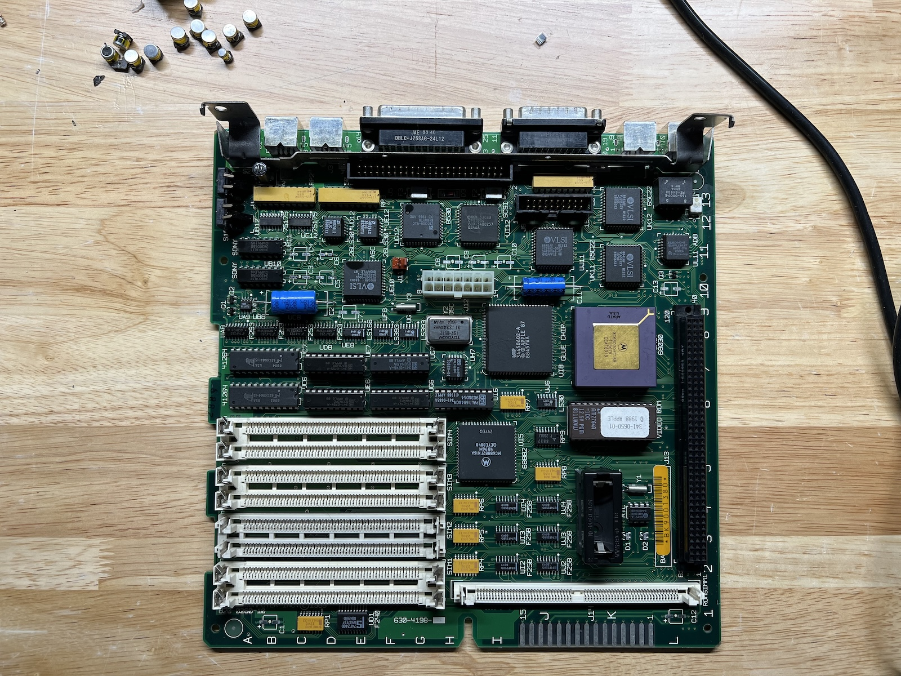
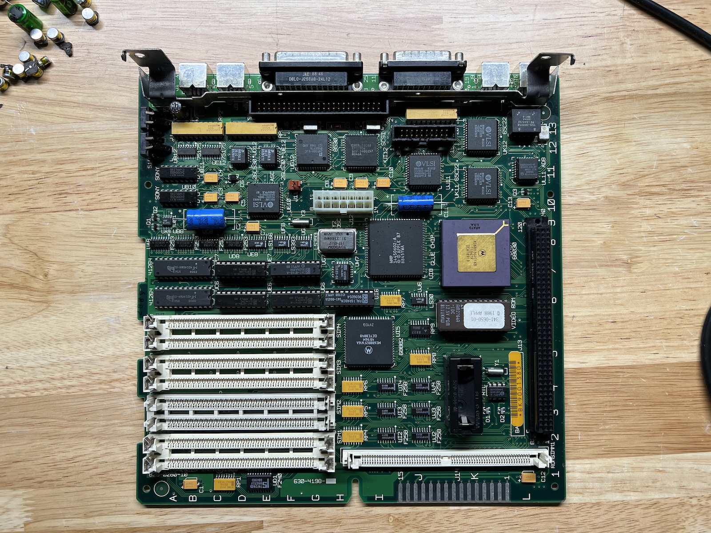
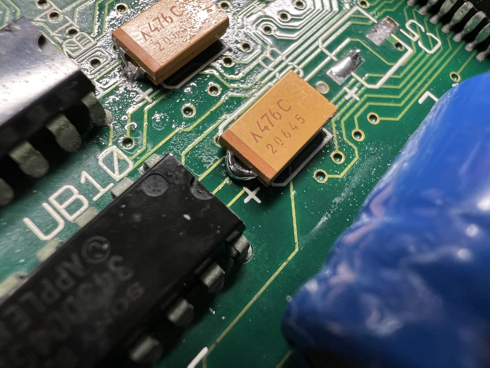
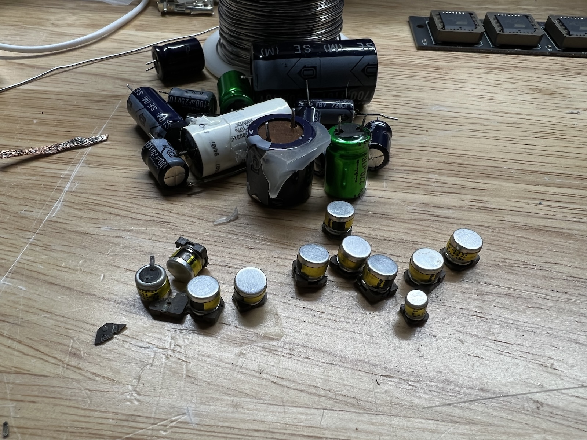
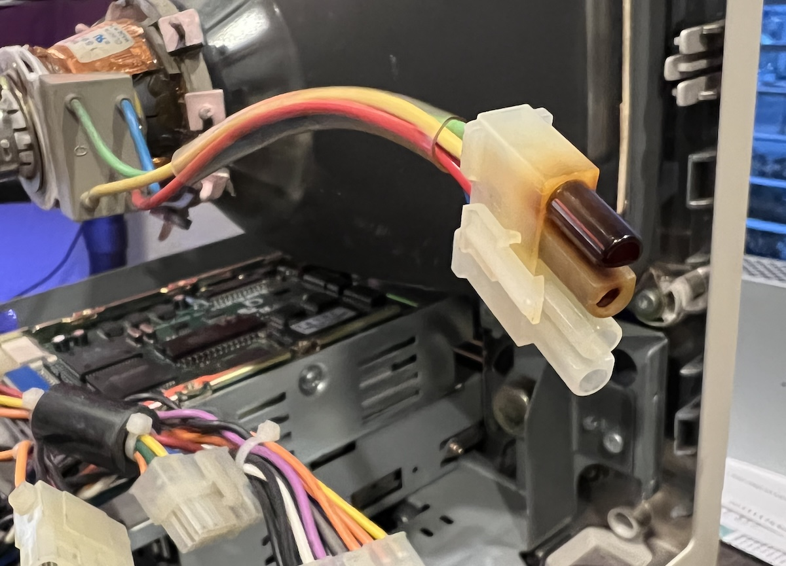
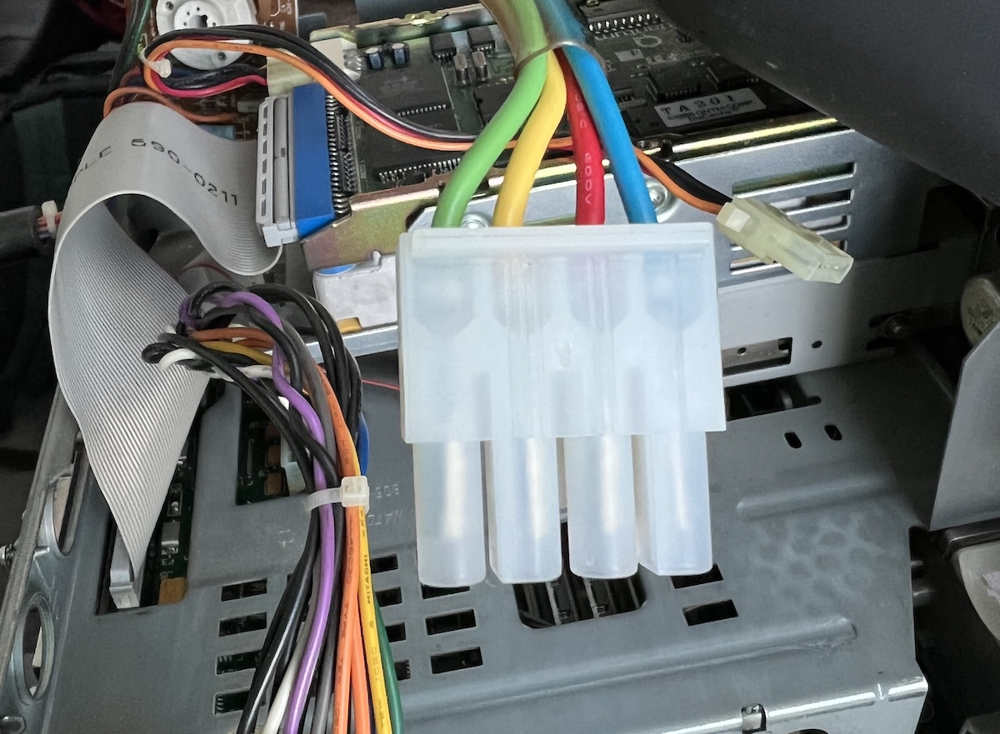
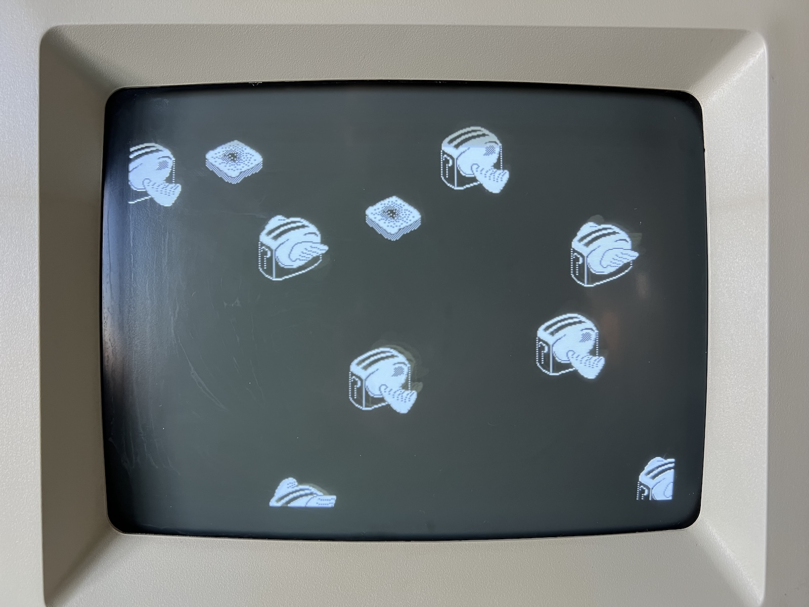

Back in February, I acquired a Macintosh SE/30. It was in need of a bit of work, and I finally got around to making all the repairs.
The first order of business was to use some cyanoacrylate glue to repair the crack in the front of the case. That had to be the first step because I didn’t want the crack to spread any further.
The next step was to desolder all the electrolytic capacitors from the logic board and replace them with new ones, using tantalum capacitors where possible. On the analog board, I recapped with newer electrolytic capacitors. Fortunately, there are so many online resources for this type of repair, like Recap-a-Mac.
The only stumbling block I encountered was one of the capacitors on the analog board. C15 is a 3.9uF 35V bipolar capacitor, which I couldn’t find anywhere.

I ended up ordering a film capacitor from Mouser that had close enough specs. Unfortunately, the leads were too short, so I had to solder a wire to one leg of the capacitor to get it to fit.

The rest of the recapping was pretty straightforward. I desoldered each capacitor, cleaned the solder pads, and installed the its replacement.
Capacitors removed:

New capacitors installed:

Well, it’s not the best solder job but it’ll do the trick:

After soldering in all the new capacitors, I gave the logic and analog boards a good scrubbing and rinsing with 99.9% isopropyl alcohol to get all the flux out and left them to dry overnight.
All the old capacitors:

I also encountered a molex connector that was burnt out.

It was difficult to remove that burnt connector because it seemed to have fused to the wire on the inside. I didn’t want to cut off too much of the wire since it was already fairly short. After a lot of prying, I finally got it off and was able to install a new connector.

With everything in place, I started up the machine and it booted smoothly into System 7.1! The screen now looked much better, albeit with the picture looking slightly warped. I adjusted the screen a little bit by manipulating the yoke, but I didn’t want to go too far since it’s a delicate piece of equipment and there was a good chance I could make it worse.
